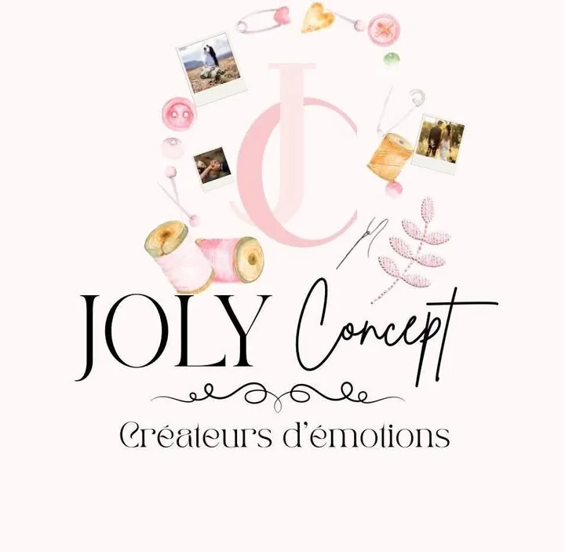
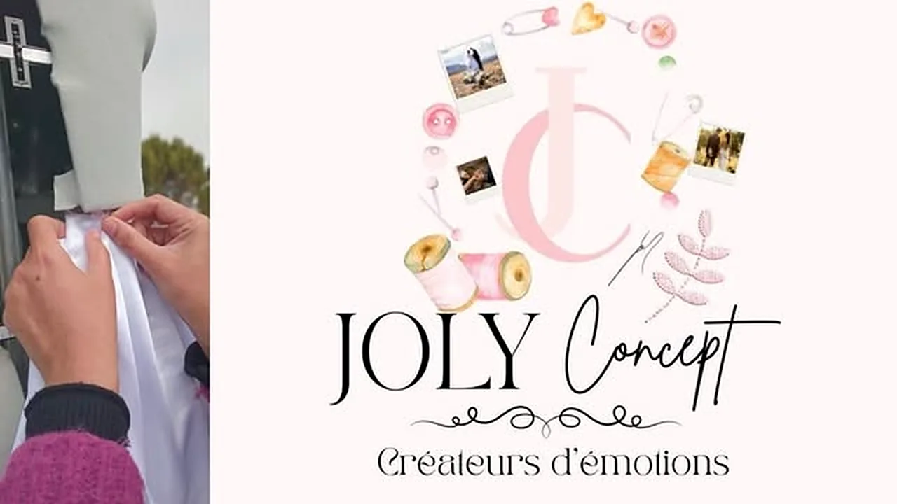
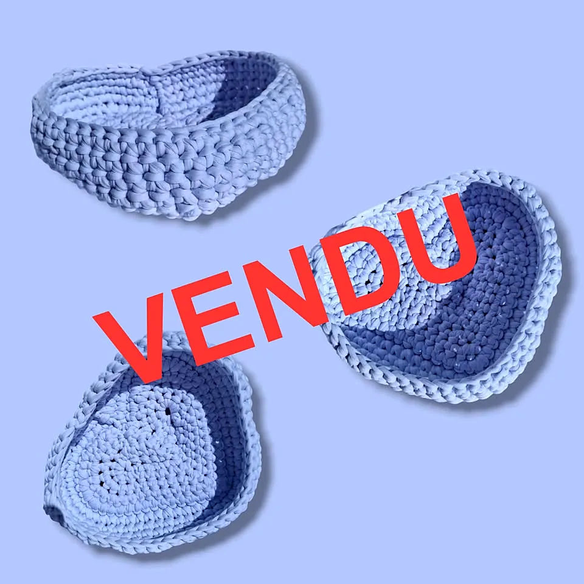
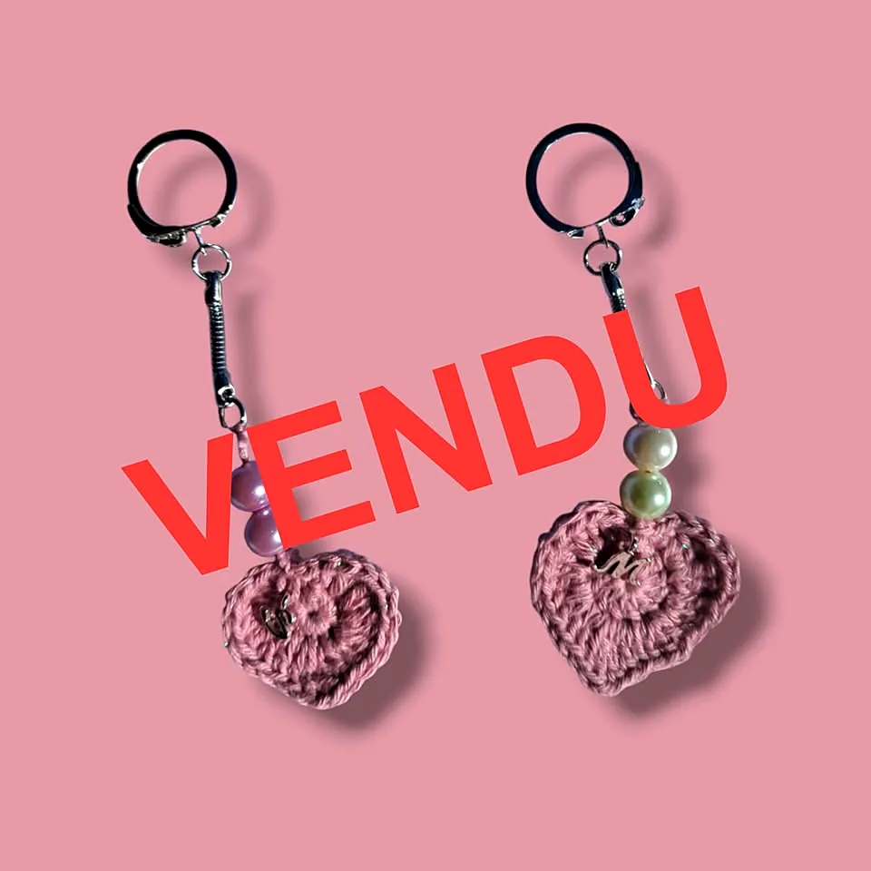
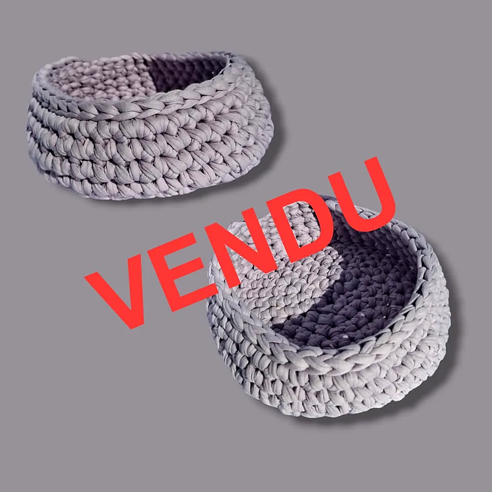
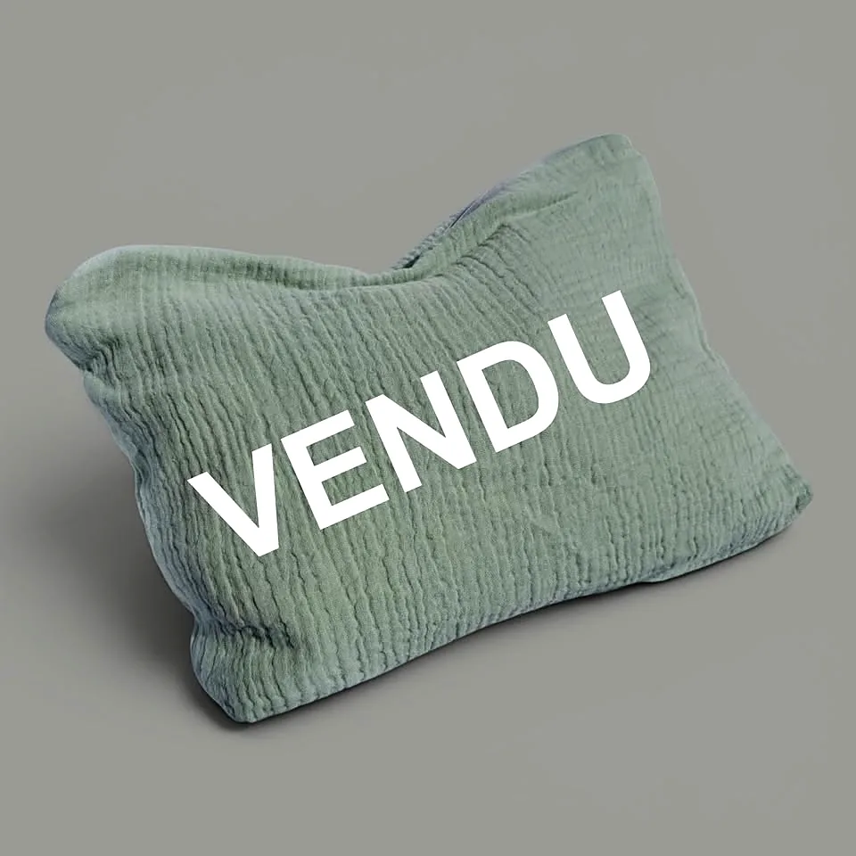
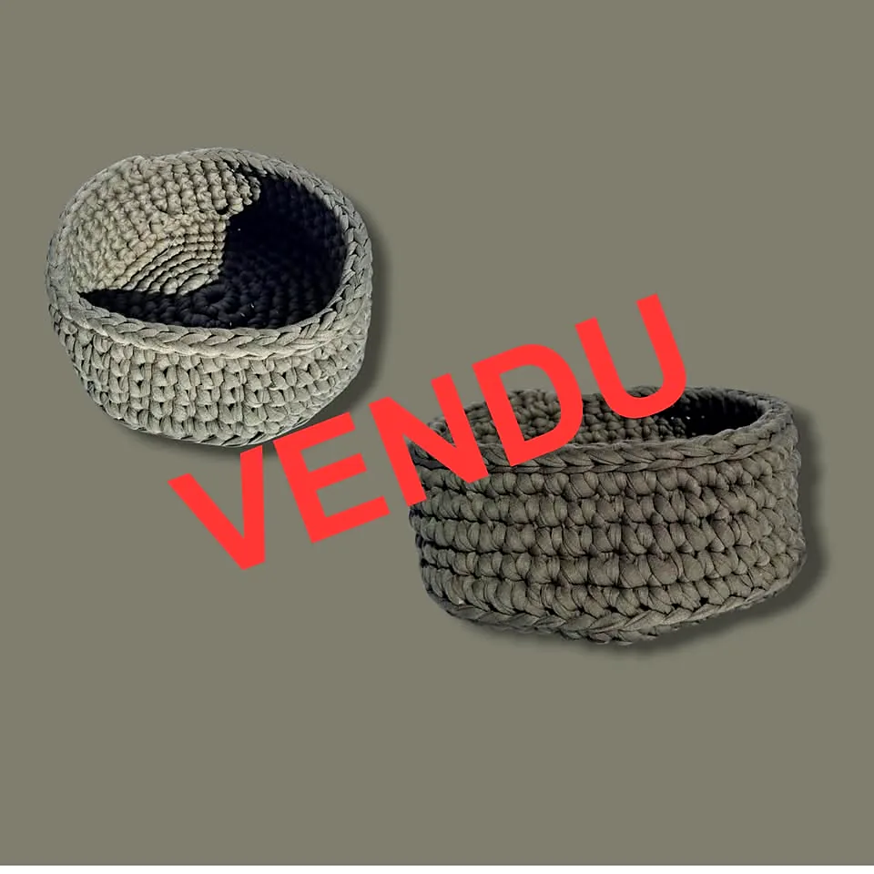
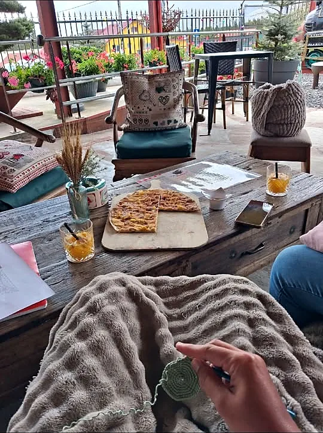
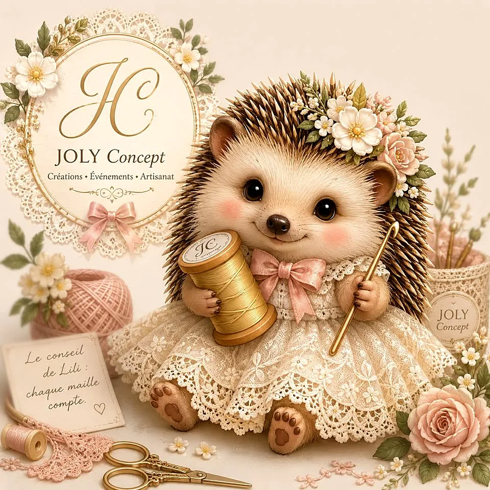

Robes de mariée
Des robes uniques, cousues 100 % à la main, pensées pour vous.

Créations · Événements · ArtisanatCréateurs d'émotions…
Couture sur mesure, crochet 100 % fait main et organisation de vos grands jours, à la Plaine des Cafres.

« Qui dit nouveau nom, dit nouveau concept ! »
Depuis la Plaine des Cafres, JOLY Concept crée des vêtements sur mesure et des articles au crochet. Et depuis juillet 2026, l'atelier s'ouvre à l'événementiel : « Nous continuerons la couture et le crochet, mais à un autre niveau ! »
« Nos robes ne ressembleront à aucune autre, 100 % fait main. »
Robes, décoration, photos, traiteur : JOLY Concept s'occupe de tout, avec son partenaire Passion974 pour la partie traiteur.
Des robes uniques, cousues 100 % à la main, pensées pour vous.
Robes de demoiselle d'honneur, pour les enfants comme pour les adultes, et robes de soirée.
Une salle habillée selon votre thème, pour que tout vous ressemble.
Les souvenirs de la journée, pris en charge par l'équipe.
La partie repas avec notre partenaire Passion974.
Vêtements sur mesure et articles au crochet : paniers, coussins, porte-clés…
Pictogrammes : illustrations
Extraits de la brochure JOLY Concept, mise à jour au fur et à mesure.
Devis et informations par mail : jolyconcept974@gmail.com
Des créations faites main, souvent en pièce unique : beaucoup ont déjà trouvé leur maison !






← faites glisser →

« Chaque maille compte. »
Lili, la mascotte de JOLY Concept, rappelle l'esprit de l'atelier : du temps, du soin et de la patience dans chaque création.
Une jolie aventure qui grandit à la Plaine des Cafres.
« Nous nous lançons dans l'événementiel ! » Robes de mariée, de demoiselle d'honneur et de soirée, décoration de salle, photos et traiteur.
Le logo JOLY Concept et sa signature « Créateurs d’émotions » arrivent sur Instagram.
Les Artisans de la Plaine lancent une collecte de dons alimentaires pour aider les familles de la Plaine des Cafres.
Un moment de détente, crochet en main, à La Winstub du volcan avec O' Fil des Mailles.
Sous le sapin, glissez une pièce faite main : une création au crochet, une tenue cousue sur mesure, ou le premier pas vers un grand jour imaginé par JOLY Concept.
Idées et disponibilités à confirmer directement avec JOLY Concept.
Pour vos demandes de devis ou d'informations, écrivez-nous : nous ferons de votre journée un moment inoubliable.